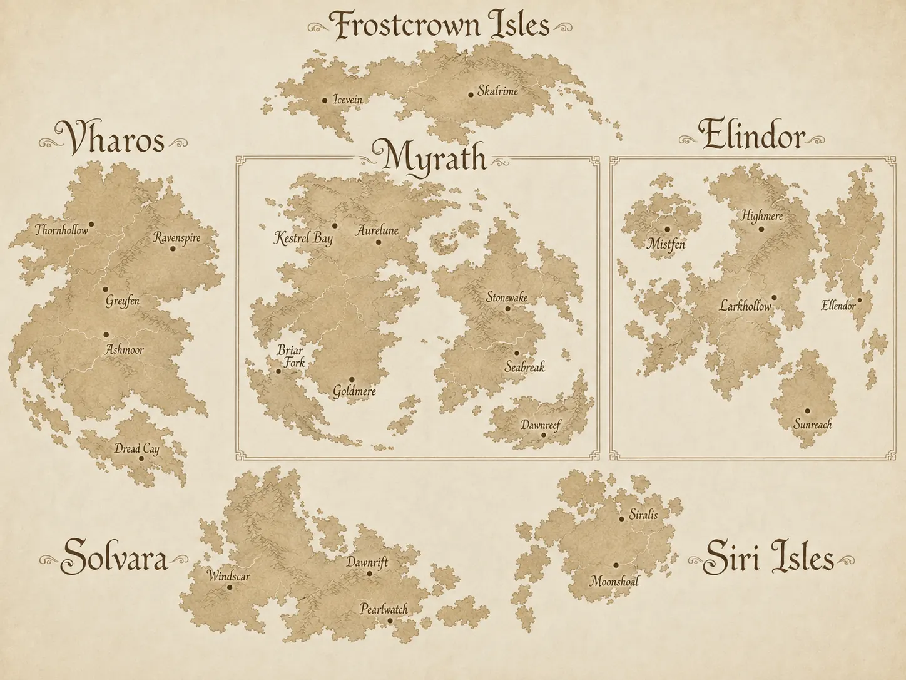
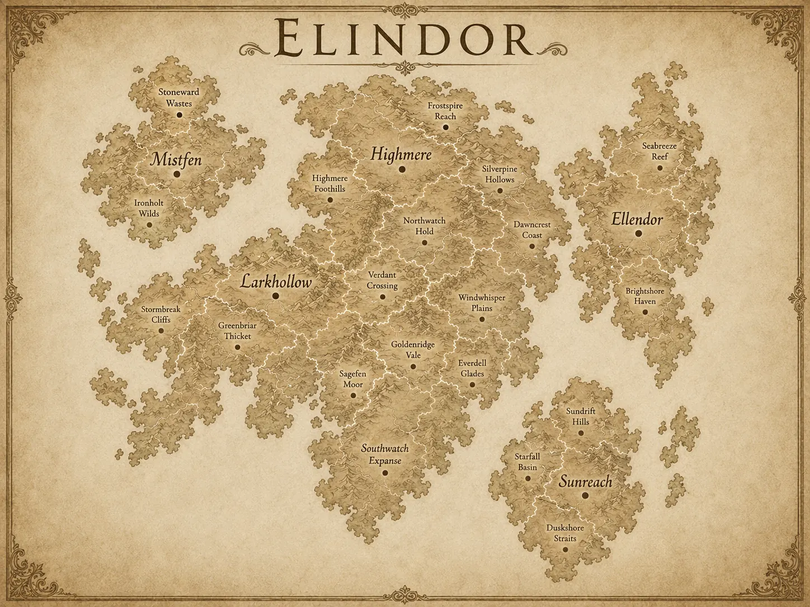
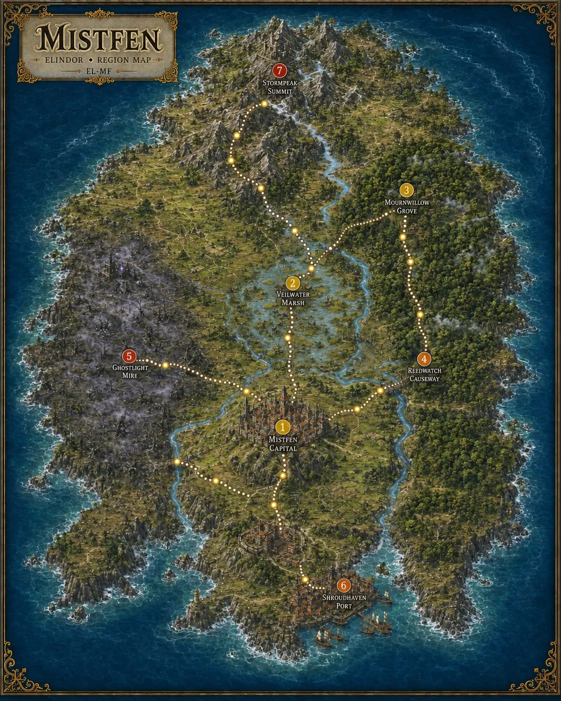
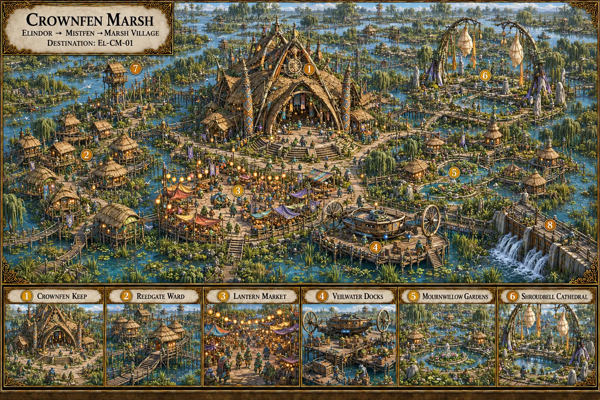
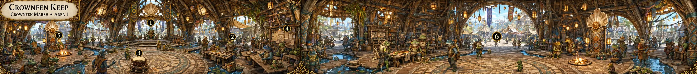
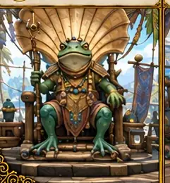

Twenty-four regions
Frostcrown Isles in the north, Vharos to the west, Myrath at the centre, Elindor to the east, Solvara and the Siri Isles to the south. Scroll to travel across them.
An anime-fantasy open world you explore map by map — from six continents down to a single room, and six choices inside it.
Every journey starts on the world map. Each coloured point is a region, and its colour is its threat — how dangerous the road ahead will be.
Frostcrown Isles in the north, Vharos to the west, Myrath at the centre, Elindor to the east, Solvara and the Siri Isles to the south. Scroll to travel across them.






Six continents and the regions between them.
Nine nations hold the six continents. Their colours are subtle signs of allegiance — a sash, a sigil — never a costume that erases who a character is.
Land outside the nine is a Gray Zone — unclaimed, contested or infested territory, and usually the most dangerous ground on the map.
Every Area is a first-person panorama that loops all the way around, with exactly six numbered Objectives: people to meet, puzzles to solve, roads to take. Drag to look around.
Crownfen Marsh has eight Areas; the first six are shown here. Panoramas are painted concept art for the binder game.
Every region has its own painted map. Elindor goes deeper still — open a region, pick a numbered location, and walk right into it.
The Grand Festival begins as a celebration of peace.

Evertrail · early action-RPG beta.
Play early betaArtwork shows the intended world. The beta is an early prototype.

The shared 3D testbed also featured in HOVAGI.
Play early betaArtwork shows the intended world. The beta is an early prototype.
The binder game is the heart of Chronicle Clash: printed maps you travel across, first-person Areas you step into, and six Objectives in every one. Rules, components and release information will be shared as development progresses.